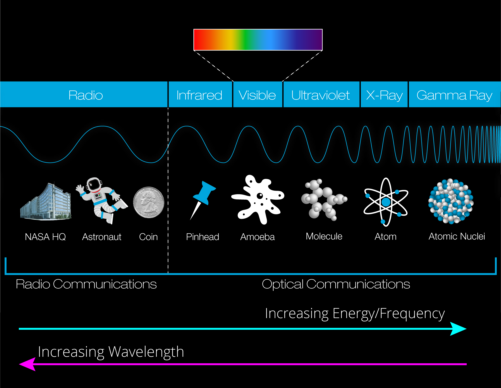

Light surrounds us each day, but what exactly is it? A particle? A wave? Unfortunately, depending on the property being investigated, the answer varies from "one", "both", to "neither" as well as "we're not quite sure." We sometimes define a "particle" of light as a photon, though unlike an actual particle, it does not have any mass. Or we may define the way light moves as a wave, but unlike other familiar waves such as ocean or sound waves light energy doesn't have to travel through a physical medium like air or water… it can travel in the vacuum of space! This complex puzzle is still being unraveled, but what the scientific world does know can be explored in the Ocean Optics Web Book. While we cannot precisely point to what exactly light is, we have gotten quite good at describing what light does. For example, whether we define light in terms of photons or waves, we know that it moves at very high speeds: 671,000,000 mph! In fact, it is impossible for anything to travel faster than light!! Light can be described by its wavelength and frequency. Wavelength is the distance between two peaks or two valleys of a light wave, and frequency is how many of these waves pass a point in one second. Longer wavelengths have lower frequencies and carry less energy. Shorter wavelengths have higher frequencies and more energy. Now that we understand the relationship between wavelength and frequency, let's look at different types of light based on their wavelength.

This spectrum of energy, or spectrum of light, is referred to as the Electromagnetic Spectrum.
NASA explores the properties of different wavelength regions in the electromagnetic spectrum ranging from radiowaves to gamma rays. Right around the middle of the spectrum we have
visible light - the rainbow of colors we know and love. Just shorter than visible light are the ultraviolet wavelengths, which we wear sunscreen to protect ourselves from.
Just longer than visible light is infrared, which we sense as warmth on our skin.
Let's take a closer look at visible light. Blue light has more energy than red light because it has a shorter wavelength. The wavelength of blue light is between 450-490 nanometers (nm), while red light’s wavelength is between 620-750 nm. A nanometer is a really tiny unit of length, equal to one billionth of a meter. When scientists talk about how light interacts with the ocean and the atmosphere, they often measure wavelengths in nanometers to understand the light better.
PACE will measure light over a broader range of the electromagnetic spectrum and with more precision and detail than ever before. PACE's fine-resolution measurements, known as hyperspectral imaging, will provide new insights into our ocean and atmosphere. Want to learn more? Check out the Colorful World e-brochure.
Most of the light reaching earth comes from our Sun. It is generated by nuclear reactions in the Sun's core that convert hydrogen into helium, releasing energy (photons!) in the process. For more information on how light is produced by the Sun, check out the Ocean Optics Textbook. When there are no obstacles in its path, light travels in straight lines that extend in all directions from its source (like the surface of an expanding sphere/ball). Once light encounters an obstacle say a molecule of carbon dioxide, the leaf of a plant, or an asphalt road it will interact with that object in one of several ways. Now, let's explore some key terms that help us better understand the properties and behavior of light.
Do you have a rainbow connection? While rainbows symbolize peace for many modern cultures, they are also fascinating optical studies. Rainbows are multicolor displays created by sunlight shining through raindrops. But the light performs some interesting tricks inside those raindrops before colors burst out the other side! Light rays entering raindrops undergo refraction at the initial surface of the raindrop, which bends the light rays, but also causes a separation of the light into the distinct colors of the visible spectrum, a process called dispersion, seen in the animation below. These raindrops are acting like optical prisms, or "white light splitters". You may be familiar with the acronym, VIBGYOR (Violet, Indigo, Blue, Green, Yellow, Orange, Red.) ? This denotes the predictable order of the light wavelengths that occur when dispersed/refracted. More energetic wavelengths (e.g., violet) slow down slightly more than the less energetic wavelengths (e.g., red). Back inside our raindrop example, the dispersed light is reflected off the back of the raindrop, and refracted once again as it exits the raindrop back into air, and then travels to our eyes. Did you know that rainbows occur in the section of the sky opposite the Sun? So next time you want to see a rainbow, make sure to turn so the Sun is at your back.